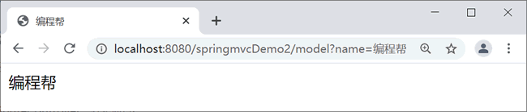

首页 > 编程笔记
Spring MVC @ModelAttribute注解
本文介绍在 Spring MVC 中非常重要的注解 @ModelAttribute，用来将请求参数绑定到 Model 对象。
在 Controller 中使用 @ModelAttribute 时，有以下几种应用情况。
需要注意的是，因为模型对象要先于 controller 方法之前创建，所以被 @ModelAttribute 注解的方法会在 Controller 每个方法执行之前都执行。因此一个 Controller 映射多个 URL 时，要谨慎使用。
以上示例，在请求 /model?name=%E7%BC%96%E7%A8%8B%E5%B8%AE 后，Spring MVC 会先执行 myModel 方法，将 name 的值存入到 Model 中。然后执行 model 方法，这样 name 的值就被带到了 model 方法中。
将 myModel 和 model 方法合二为一后，代码如下。
对于以上情况，返回值对象 name 会被默认放到隐含的 Model 中，在 Model 中 key 为返回值首字母小写，value 为返回的值。等同于
但正常情况下，程序中尽量不要出现 key 为 string、int、float 等这样数据类型的返回值。使用 @ModelAttribute 注解 value 属性可以自定义 key，代码如下。
以“user”为键值存储在 Model 对象中，和“model.addAttribute("user",user)”语句的功能一样。如果没有指定键值，即“@ModelAttribute UserForm user”，那么在创建 UserForm 实例时以“userForm”为键值存储在 Model 对象中，和“model.addAtttribute("userForm", user)”语句的功能一样。
@ModelAttribute 和 @RequestMapping 注解同时应用在方法上时，有以下作用：
总而言之，@ModelAttribute 注解的使用方法有很多种，非常灵活，可以根据业务需求选择使用。
ModelAndView：包含 model 和 view 两部分，使用时需要自己实例化，利用 ModelMap 来传值，也可以设置 view 的名称。
在 Controller 中使用 @ModelAttribute 时，有以下几种应用情况。
- 应用在方法上
- 应用在方法的参数上
- 应用在方法上，并且方法也使用了 @RequestMapping
需要注意的是，因为模型对象要先于 controller 方法之前创建，所以被 @ModelAttribute 注解的方法会在 Controller 每个方法执行之前都执行。因此一个 Controller 映射多个 URL 时，要谨慎使用。
1. 应用在方法上
下面从应用在有无返回值的方法上两个方面进行讲解。1）应用在无返回值的方法
示例 1：创建 ModelAttributeController，代码如下。
package net.biancheng.controller;
import org.springframework.stereotype.Controller;
import org.springframework.ui.Model;
import org.springframework.web.bind.annotation.ModelAttribute;
import org.springframework.web.bind.annotation.RequestMapping;
import org.springframework.web.bind.annotation.RequestParam;
@Controller
public class ModelAttributeController {
// 方法无返回值
@ModelAttribute
public void myModel(@RequestParam(required = false) String name, Model model) {
model.addAttribute("name", name);
}
@RequestMapping(value = "/model")
public String model() {
return "index";
}
}
创建 index.jsp 页面，代码如下。
<%@ page language="java" contentType="text/html; charset=UTF-8"
pageEncoding="UTF-8"%>
<!DOCTYPE html PUBLIC "-//W3C//DTD HTML 4.01 Transitional//EN" "http://www.w3.org/TR/html4/loose.dtd">
<html>
<head>
<meta http-equiv="Content-Type" content="text/html; charset=UTF-8">
<title>编程帮</title>
</head>
<body>
${name }
</body>
</html>
访问地址：http://localhost:8080/springmvcDemo2/model?name=%E7%BC%96%E7%A8%8B%E5%B8%AE，运行结果如图 1 所示。

图 1：运行结果
图 1：运行结果
以上示例，在请求 /model?name=%E7%BC%96%E7%A8%8B%E5%B8%AE 后，Spring MVC 会先执行 myModel 方法，将 name 的值存入到 Model 中。然后执行 model 方法，这样 name 的值就被带到了 model 方法中。
将 myModel 和 model 方法合二为一后，代码如下。
@RequestMapping(value = "/model")
public String model(@RequestParam(required = false) String name, Model model) {
model.addAttribute("name", name);
return "index";
}
2）应用在有返回值的方法
示例 2：修改 ModelAttributeController 控制类，代码如下。
package net.biancheng.controller;
import org.springframework.stereotype.Controller;
import org.springframework.ui.Model;
import org.springframework.web.bind.annotation.ModelAttribute;
import org.springframework.web.bind.annotation.RequestMapping;
import org.springframework.web.bind.annotation.RequestParam;
@Controller
public class ModelAttributeController {
// 方法有返回值
@ModelAttribute("name")
public String myModel(@RequestParam(required = false) String name) {
return name;
}
@RequestMapping(value = "/model")
public String model() {
return "index";
}
}
修改 index.jsp，代码如下。
<%@ page language="java" contentType="text/html; charset=UTF-8"
pageEncoding="UTF-8"%>
<!DOCTYPE html PUBLIC "-//W3C//DTD HTML 4.01 Transitional//EN" "http://www.w3.org/TR/html4/loose.dtd">
<html>
<head>
<meta http-equiv="Content-Type" content="text/html; charset=UTF-8">
<title>编程帮</title>
</head>
<body>
${string }
</body>
</html>
访问地址和运行结果与示例 1 相同。对于以上情况，返回值对象 name 会被默认放到隐含的 Model 中，在 Model 中 key 为返回值首字母小写，value 为返回的值。等同于
model.addAttribute("string", name);。但正常情况下，程序中尽量不要出现 key 为 string、int、float 等这样数据类型的返回值。使用 @ModelAttribute 注解 value 属性可以自定义 key，代码如下。
// 方法有返回值
@ModelAttribute("name")
public String myModel(@RequestParam(required = false) String name) {
return name;
}
等同于
model.addAttribute("name", name);
2. 应用在方法的参数上
@ModelAttribute 注解在方法的参数上，调用方法时，模型的值会被注入。这在实际使用时非常简单，常用于将表单属性映射到模型对象。
@RequestMapping("/register")
public String register(@ModelAttribute("user") UserForm user) {
if ("zhangsan".equals(uname) && "123456".equals(upass)) {
logger.info("成功");
return "login";
} else {
logger.info("失败");
return "register";
}
上述代码中“@ModelAttribute("user") UserForm user”语句的功能有两个：
- 将请求参数的输入封装到 user 对象中
- 创建 UserForm 实例
以“user”为键值存储在 Model 对象中，和“model.addAttribute("user",user)”语句的功能一样。如果没有指定键值，即“@ModelAttribute UserForm user”，那么在创建 UserForm 实例时以“userForm”为键值存储在 Model 对象中，和“model.addAtttribute("userForm", user)”语句的功能一样。
3. ModelAttribute+RequestMapping
示例 3：修改 ModelAttributeController，代码如下。
package net.biancheng.controller;
import org.springframework.stereotype.Controller;
import org.springframework.ui.Model;
import org.springframework.web.bind.annotation.ModelAttribute;
import org.springframework.web.bind.annotation.RequestMapping;
import org.springframework.web.bind.annotation.RequestParam;
@Controller
public class ModelAttributeController {
// @ModelAttribute和@RequestMapping同时放在方法上
@RequestMapping(value = "/index")
@ModelAttribute("name")
public String model(@RequestParam(required = false) String name) {
return name;
}
}
index.jsp 代码如下。
<%@ page language="java" contentType="text/html; charset=UTF-8"
pageEncoding="UTF-8"%>
<!DOCTYPE html PUBLIC "-//W3C//DTD HTML 4.01 Transitional//EN" "http://www.w3.org/TR/html4/loose.dtd">
<html>
<head>
<meta http-equiv="Content-Type" content="text/html; charset=UTF-8">
<title>编程帮</title>
</head>
<body>
${name }
</body>
</html>
访问地址：http://localhost:8080/springmvcDemo2/index?name=%E7%BC%96%E7%A8%8B%E5%B8%AE，运行结果如图 1 所示。@ModelAttribute 和 @RequestMapping 注解同时应用在方法上时，有以下作用：
- 方法的返回值会存入到 Model 对象中，key 为 ModelAttribute 的 value 属性值。
- 方法的返回值不再是方法的访问路径，访问路径会变为 @RequestMapping 的 value 值，例如：@RequestMapping(value = "/index") 跳转的页面是 index.jsp 页面。
总而言之，@ModelAttribute 注解的使用方法有很多种，非常灵活，可以根据业务需求选择使用。
Model和ModelView的区别
Model：每次请求中都存在的默认参数，利用其 addAttribute() 方法即可将服务器的值传递到客户端页面中。ModelAndView：包含 model 和 view 两部分，使用时需要自己实例化，利用 ModelMap 来传值，也可以设置 view 的名称。
拓展
@ModelAttribute 注解的方法会在每次调用该控制器类的请求处理方法前被调用。这种特性可以用来控制登录权限。创建 BaseController，代码如下所示。控制登录权限的方法有很多，例如拦截器、过滤器等。
package net.biancheng.controller;
import javax.servlet.http.HttpSession;
import org.springframework.web.bind.annotation.ModelAttribute;
public class BaseController {
@ModelAttribute
public void isLogin(HttpSession session) throws Exception {
if (session.getAttribute("user") == null) {
throw new Exception("没有权限");
}
}
}
创建 ModelAttributeController ，代码如下所示：
package net.biancheng.controller;
import org.springframework.web.bind.annotation.RequestMapping;
@RequestMapping("/admin")
public class ModelAttributeController extends BaseController {
@RequestMapping("/add")
public String add() {
return "addSuccess";
}
@RequestMapping("/update")
public String update() {
return "updateSuccess";
}
@RequestMapping("/delete")
public String delete() {
return "deleteSuccess";
}
}
在上述 ModelAttributeController 类中的 add、update、delete 请求处理方法执行时，首先执行父类 BaseController 中的 isLogin 方法判断登录权限，可以通过地址“http://localhost:8080/springMVCDemo2/admin/add”测试登录权限。关注公众号「站长严长生」，在手机上阅读所有教程，随时随地都能学习。内含一款搜索神器，免费下载全网书籍和视频。

微信扫码关注公众号